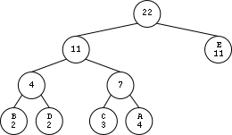

13/Mai (22:00) - Data e hora limite de entrega com atraso. Um valor de penalização por cada dia de atraso
Changelog
- 24/Abr - Possíveis correções a este enunciado serão assinaladas aqui.
- 27/Abr - Alterada a descrição da forma como o fim de ficheiro é tratado, deixando de ser necessário definir um símbolo especial para o representar. Esta alteração tem impacto na estrutura ZipperInfo e no formato binário do ficheiro codificado. Como consequência, o ficheiro zipper.h foi alterado, pelo que deverá descarregar a versão nova.
- 28/Abr - A descrição da forma como lidar com o fim de ficheiro foi revista e a estrutura ZipperInfo foi de novo alterada, sendo necessário proceder à atualiação do ficheiro zipper.h.
- 29/Abr - Foram apagadas duas linhas com lixo esquecido dentro dos ficheiros "zipper.h" e "zipper.c", mas tratam-se de mudanças triviais que não requerem a atualização dos seus ficheiros. (Se quiser saber mais sobre isto, leia as primeiras mensagens do tópico do fórum "Projeto 2 - Dúvidas sobre o enunciado").
- 1/Mai - Na secção "The end of file" clarificou-se o significado de "padding" e acrescentou-se um parágrafo no final da secção relativo ao último byte escrito pelo codificador. A secção "Removing ambiguity..." foi completada e clarificada com a descrição do critério de ordenação das árvores na floresta.
- 3/Mai - O teste T07 do concurso de teste tinha dois campos do header trocados. Já foi corrigido.
Regras de submissão
Super Zipper
Introduction
In today's world, the great appetite for bandwidth in communications and the desire to store large volumes of data makes data compression an important technology. This second LAP project is about data compression.
The goal of this project is to develop a module in C, called "Zipper", exporting a collection of types and functions that are used in the implementation of a particular compressing/decompressing algorithm.
Basic compressing technique
When the Morse alphabet was envisioned, the choice of the sequences of dots and dashes was not made at random. One obvious goal was to minimize the length of the messages and therefore a variable-length encoding was used, associating shorter sequences of dots and dashes to the most commonly used characters.
This idea of using binary strings of variable size to represent different symbols persists in many modern compression algorithms. The sequence of bits that is used to represent an input symbol is called the code of that symbol.
In out algorithm, that we will call basic technique, the input file is traversed twice:
- The first traversal is used to collect statistical data, specifically the number of occurrences of each symbol in the input file. This information is saved in a frequency table which is then used to build a, so called, compression tree which establishes the optimal encoding for each symbol in terms of a sequence of bits. Finally the optimal encodings are collected in a translation dictionary.
- The second traversal of the file performs the actual compression using the translation dictionary. Besides the compressed data, the output file must also contain a representation of the compression tree, to allow the decompression of the file to be performed later.
An example
Suppose that the input file contains only these five distinct symbols, A, B, C, D, E, with the number of occurrences 4, 2, 3, 2, 11, respectively. In total there are 22 symbols. This information is stored in a frequency table.
The compression tree corresponding to the previous frequency table is this:

Note that the symbols appear in tree leaves accompanied by their respective frequencies. As for the internal nodes, they record the sum of the frequencies of the descendant symbols. According to these rules, the root always records the total number of symbols contained in the file, in this case 22.
There is a simple rule to obtain the code for each symbol from the tree. Starting from the root and making the journey down towards the symbol of interest, we consider that each left descend represents the bit 0 and each right descend represents the bit 1. From the compression tree we build an translation dictionary for our five symbols as follows:
A 011
B 000
C 010
D 001
E 1
Now we are ready to perform the actual compression.
Non-prefix property
Note that in our dictionary, none of the codes is prefix of any other code. For example , there is a "000" but there are no more codes beginning with "000" . There is also a "1" but there are no more codes beginning "1". This easily results from the fact that all symbols are located at the leaves of the compression tree.
This property, called non-prefix property, allows the unambiguous encoding of the data.
Construction of the compression tree
Here is a method for creating the compression tree from the frequency table:
- Firstly, build up a forest of trees, all with a single node. Each node contains a different symbol and the corresponding frequency. In the case of our example, there will be five trees initially.
- If there is more than one tree in the forest, pick up two trees with minimum frequencies at their roots and remove the two trees from the forest. Use the removed trees as subtrees in building a new tree, calculate the sum of the frequencies of the two trees, store the result in the root of the new tree.
- Repeat this process until only a single tree remains in the forest. This is the desired compression tree.
Properties of a compression tree
Every compression tree has the following three interesting properties:
- An internal node always has two children.
- The frequency of an internal node is always strictly greater than the frequency of any of his two sons.
- Performing a scanning of the tree by levels, from bottom to top and from left to right, the sequence of frequencies of the nodes is never decreasing.
Decompressing a compressed file
Decompressing a compressed file requires the compression tree that was used to perform the initial compression. Just read the compressed file, bit by bit, and use the bits to guide you along a downward path of the tree. When you reach a leaf, a symbol has been recognized. Proceed to recognize the next symbol.
The end of file
Returning to our example, the 22 input file symbols are compressed into 44 bits (44=3*4+3*2+3*3+3*2+1*11). But this number is not a multiple of 8, which means that the last bit of the compressed data does not end at the border of a byte. So this question arises: how can the decoder determine where the data really ends in the encoded file?
We solve this problem by having the encoder writing the total number of symbols in the header of the encoded file (more on this later). For now, we just need to realize that this information is already known, since our root node of the compression tree stores it.
However, there is yet another problem during the enconding, now concerning the last symbol of the input file. Since the compressor processes the input file as a sequence of symbols of length N, the original file may not end at a symbol boundary. So, the last symbol is required to be padded (filled on the right) with zeros before encoding. Thus, the decoder will later face the problem of not knowing how many zeros were padded during compression. To solve this problem, we have the encoder writing, in the header of the compressed file, the real length (in bits) of the last symbol.
Since the operating system does not allow us to have files whose size is not an integral number of bytes, in case our encoded file does not end at a byte boundary, we fill the missing bits with zeros on the right (padding)
Criticism
The compression technique used in this project has several problems:
- Requires scanning the input file twice.
- Forces us to put a representation of the compression tree inside the compressed file. Sometimes the compressed file even gets bigger than the original file.
- It is based on statistics over the entire file, not taking into account the local context. Indeed, sometimes a symbol is used more in some parts of the file than others: it would be good if the encoding of that symbol could evolve over time depending on the local context.
Nevertheless, it already exhibits some important ingredients of real-life compressing tools.
Programming the system
We now move to the details regarding the implementation of our system. You will need to program all the required operations in a single file. We provide you with an initial skeleton of the required zipper.c. The header file zipper.h is also provided and you cannot modify its contents. We also include an example main.c for your convenience.
Reading and writing bits
As you probably guessed, we will need to implement operations that will allow us to read and write arbitrary sequences of bits from/into files. We call these sequences Chunk and its data type is internally defined as a 32-bit unsigned value:
typedef uint32_t Chunk;
For convenience we also declare the following additional basic data types:
typedef signed char Bit;
typedef Chunk Symbol; // Chunks from the original (unencoded) file
typedef Chunk Code; // Chunks representing encoded symbols
Our chunks store their bit sequences right aligned. So, if a chunk represents a sequence of 13 bits, for example, these bits are supposed to be least significant ones of the 32 used internally. Important: In all chunk operations, their bits are read/written to the file from left to right.
There is a subtle detail regarding this way of representing sequences of bits: we can't tell their length just by looking at their value! For instance, the sequences 101, 0101 and 00101 will all be represented in the same way. We solved this problem (not in an ideal way) by carrying along, in most Chunk operations, a value representing the length of the chunk.
The ChunksFile data type will allow the operations listed below:
/*
returns an handle to a ChunksFile file (mode can be either "r" or "w" with the usual significance).
NULL is returned if file can't be opened
*/
ChunksFile cfOpen(const char *filename, const char *mode);
/*
closes a ChunksFile file
*/
void cfClose(ChunksFile cf);
/*
Requests a Chunk of length len from the ChunksFile file. Returns the number of bits effectively read.
Upon completion chunk will hold the bit sequence just read (right aligned).
*/
size_t cfGet(ChunksFile cf, Chunk *chunk, size_t len);
/*
Writes a chunk with length len into the Chunks file. Returns the the number of bits written.
Bits are written starting at the most significant bit used in the chunk
*/
size_t cfPut(ChunksFile cf, Chunk chunk, size_t len);
/*
Read a bit from the file. Returns -1 at end of Chunks file.
*/
Bit cfGetBit(ChunksFile cf);
/*
Writes a bit into the file. Return the number of bits written: 1 if bit was successfully written, 0 otherwise
*/
size_t cfPutBit(ChunksFile cf, Bit b);
The top level functions
The top level functions used to compress and decompress files are listed below:
void zip(const char *namein, const char *nameout, size_t symLength);
void unzip(const char *namein, const char *nameout);
One thing that you may find intriguing is the last argument of the zip operation. In fact, since we have bit access to the files we are not restricted to handle the input (uncompressed) files as sequences of bytes. We may treat the the file to be compressed as a sequence of symbols of fixed length, but not necessarily with the value 8. Thus, we can compress files treating them as sequences of symbols with length 4, 7, 11, etc.
Also, by looking at the unzip function's arguments, we observe that, for decompression, we don't need to pass the symbol length as an argument. Not that we will not need it, but because it would be extremely frustrating to have to memorize which length was used during the compression to be able to decompress a file. A better way is to store that information in clear, at the start of the encoded (compressed) file.
Encoding symbols and decoding codes...
The two operations that will do the job of encoding symbols into codes and decoding codes back to symbols are listed below:
/*
Low level Zipper operations
*/
size_t encode(ChunksFile cf, ZipperInfo zi, Code *c); // Reads a symbol from the ChunksFile cf, returns its c (in *c) and its length
size_t decode(ChunksFile cf, ZipperInfo zi, Symbol *s); // Reads a code from the ChunksFile cf, returns its s (in *s) and its length
These functions operate directly from the files that are being processed. After an encoding or decoding operation, we have consumed a little bit more of the input file. In these functions, we need to return two different values: the chunk and its length. The return value is the number of bits of the Chunk representing the encoded symbol or the decoded code. The chunk is returned via an output parameter.
Central to these operations is the ZipperInfo structure, defined in zipper.h. This structure holds all the information needed for the encode and decode operations. Unsurprisingly, this structure holds both the compression tree and the translation dictionary, both described in the Basic Compression Technique.
Binary format of the compressed file
The compressed file is organized in 3 sections:
- header
- 4 bits containing the symbol length (0000 represents the value 16). As a consequence we cannot (and we wouldn't want to either) treat the input symbols as having more than 16 bits.
- This is followed by a 32-bit sequence representing the total number of symbols contained in the input file.
- This is followed by 4 bits containing the number of bits of the last symbol in the input file (0000 represents the value 16).
- compression tree
- the following bits represent the compression tree (more on this below).
- body
- the stream of bits representing the encoded file contents.
Storing the compression tree in a file...
As mentioned before, the compression tree needs to be included in the compressed file. Since the data type for the actual tree is an opaque data type that you will have to choose and implement, we can only describe how the tree needs to be stored in the compressed file.
The algorithm to dump the compression tree is quite simple:
- Start at the root node
- If the node is an internal node, write the bit 0 to the output file and recursively treat the left subtree and the right subtree in this order.
- If the node is a leaf node, write the bit 1, followed by the chunk representing the symbol stored at the leaf node. Note that all these symbols have the same length.
Removing ambiguity...
During the tree construction process, we repeatedly take two trees from the forest and merge them as subtrees under a new parent node. Two questions arise if we want a completely unambiguous process:
- Which two trees should we pick?
- Which will be the left and the right subtrees?
Firstly, we need to define a total order "<" over the trees in our forest:
- Given the trees t1 and t2, we say that t1 < t2 if the frequency count at the root of t1 is lesser then the frequency count at the root of t2.
- In case the frequency count of t1 and t2 are the same, we use the leftmost symbol of each tree to break the tie.
Now, the answers to the two questions:
- We always pick the two lesser trees from the forest.
- The left tree will be the lesser tree amoung the two picked trees.
Note that these rules were used at each and every step, when building the tree of our example.
Where to start?
We strongly advise you to start with the ChunksFile file access operations. Next we recommend you to implement the operations of the FreqTable datatype and count the occurrences of the symbols in an input file. Alternatively, in an even easier starting approach, you can treat the files to be compressed as sequences of bytes (8 bits) and start right away with FreqTable operations.
Regras principais
- Escreva um ficheiro chamado "zipper.c". Nas regras de submissão será explicada a forma de submeter no Mooshak.
- O ficheiro "zipper.c" tem de incluir, logo nas primeiras linhas, um comentário inicial contendo: o nome e número dos dois alunos que realizaram o projeto; indicação de quais as partes do trabalho que foram feitas e das que não foram feitas (para facilitar uma correção sem enganos); ainda possivelmente alertando para alguns aspetos da implementação que possam ser menos óbvios para o avaliador.
- O projeto é para ser realizado por grupos de dois alunos. Um projeto entregue por três ou mais alunos vale zero valores. Poderão ser permitidos grupos de um aluno em circunstâncias especiais que têm de ser bem explicadas no comentário inicial atrás referido.
- Mesmo que desenvolva o programa em Windows ou no MacOS, a versão final do seu programa deverá correr no sistema Linux instalado nos laboratórios.
- O programa deve ser bem indentado, por forma a ficar bem legível. Além disso, a largura do programa não deve exceder as 80 colunas para poderem ser impressos. Podem haver algumas exceções, muito pontuais.
- O não cumprimento das regras anteriores implica penalizações automáticas na nota.
Regras de entrega
- Será ativado um concurso do Mooshak, que servirá para submeter os trabalhos. Os detalhes da forma de fazer a submissão serão divulgados nessa altura. Até lá preocupe-se apenas em escrever um bom programa.
- Depois do prazo limite ainda se aceitam trabalhos atrasados, mas com penalizações na nota. Mais detalhes nas primeiras linhas deste enunciado.
Outras regras
- Apesar de o projeto ser de grupo, cada aluno, a título individual, tem a responsabilidade de responder por todo o projeto. Assim é indispensável que os dois membros de cada grupo programem efetivamente.
- Não se proíbe que alunos de turnos práticos diferentes façam grupo. Isso é apenas desaconselhado.
- Não há inscrição prévia dos grupos e basta que cada trabalho tenha 2 autores identificados.
- A nota máxima do projeto é 20 valores.
Avaliação
O docente responsável pela gestão e pela avaliação deste trabalho é o Professor Fernando Birra.
A nota do projeto será em grande parte determinada por meios automáticos, através do Mooshak. Portanto é essencial respeitar a especificação contida neste enunciado, em todos os seus detalhes.
Mas, relativamente a programas que funcionem minimamente, também haverá uma apreciação mais subjetiva da qualidade, tendo em conta aspetos, tais como:
- organização,
- clareza e simplicidade das ideias programadas,
- bom uso da linguagem,
- legibilidade do código,
- em alguma medida, eficiência.
Obviamente não é obrigatório fazer o trabalho todo para obter nota positiva. Mas, claro, vale a pena trabalhar para produzir uma solução bastante completa e com a melhor qualidade possível.
Observações
- Os grupos são incentivados a discutir entre si aspetos do projeto, inclusivamente no fórum. Mas sempre que chega o momento de escrever código concreto, esse tem de ser um esforço interno a cada grupo (trabalhando de forma independente dos outros grupos). A escrita de código exige esforço intelectual, mas só com esforço se consegue evoluir.
- O objetivo deste projeto é levar os alunos a praticar. Um aluno que pratique de forma genuína ganha experiência e provavelmente não terá dificuldade em conseguir aprovação nos testes e exames.
- Cuidado com as fraudes. Cada grupo é responsável pelo seu projeto, tem de produzir código original, e não pode mostrar esse código a outro grupo, direta ou indiretamente, de propósito ou sem querer. É muito melhor ter uma nota baixa num dos projetos do que ser logo excluído da cadeira por motivo de fraude.
Final
Bom trabalho! Esperamos que goste.